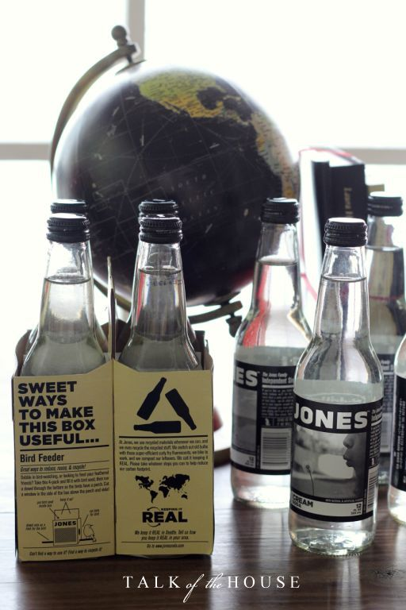

.png)
.PNG)
.PNG)
.PNG)
.PNG)
.PNG)
.JPG)
.JPG)
.PNG)
.PNG)


We had a graduation party here Saturday for this gal. There was a ton of food, and everyone seemed to enjoy the celebration. So I thought you might like to see some of the photos and details from the party.
My ever-obsessing-with-details self needed a theme for this event, and I looked at waaaay too many ideas online. I finally decided it needed to be a “school” theme (real original for a graduation party, huh?). Martha Stewart’s site seemed to have the most do-able ideas, so look there if you ever need inspiration for a celebration of this kind. It was my springboard. 🙂
We used globes, chalkboards, pencils, etc. for the decorations, and because I also loved her graduation invitations so much, I wanted to use them in some way. (We ordered them from Shutterfly.) Our daughter loves Jones’ Cream Sodas, and I love the box they come in.

And what does that have to do with graduation you might ask. Well, we cut up one of her invitations and glued it around the box. (I’ve edited out our town for privacy purposes..sorry.)
On the front of a composition notebook we also glued the front of one of her thank you notes.

And where did those lovely things end up for the party?
The notebook ended up here…
I set up this table in the family room. Obviously it had various photos of my daughter, a stack of children’s books, a jar full of Smarties, pencils and pens, a chalkboard, chalk, and the composition notebook. The chalkboard directed guests to leave a note for the graduate in the notebook. She is going to use the notebook as a graduation scrapbook – taping the cards that she receives inside.
The invitation-covered-Jones’-Soda-box ended up here…

As I said, the theme for this was “school” so I found plates that looked like school lunch trays (in an old locally owned grocery store) – complete with “milk” imprinted in one of the compartments. (By the way, my oldest son did not pick up on the theme, and commented to his younger brother, “Aren’t these plates a little cheap looking for Mom?” Little brother then informed him of all the school decor around the room… 🙂 )
I rolled up the flatware in white cloth napkins tied with a black ribbon to look like diplomas, and I tried to include some foods that would be typical of school lunches (and yet be tasty.)
Here was the menu:
Little brother also informed me that if the schools had served this kind of meal when he was there he would have eaten in the school lunchroom more often instead of his every-single-day-peanut-butter-sandwich from home. ha ha. Here is another view of the table (before the baked beans were put in their serving dish.)
I thought the centerpiece for the table turned out nicely….lucky to find all those daisies at our local Walmart. I cut some leaves from one of the holly trees in our yard to mix in with the flowers for a little greenery.
The globes came from the boys’ bedroom. I used an old rectangular vase for the pencils. The yearbooks also belonged to our sons, and I stole the pencil sharpener from the study. My favorite part of the arrangement was that Jones Soda box that we covered with parts of our daughter’s graduation invitation. The box will be a neat memento for her to keep from the party.
We used the island for the drink serving area.
And this old cabinet worked well for our desserts.
My mother made the rice krispies treats. (Thanks Mom!) A friend of mine made the brownies. (Thanks Paulette!) My niece had an oreo stacked “cake” as the groom’s cake at her wedding last fall, and I thought it would be a neat thing to have for this party. So I had the fun of snacking…I mean stacking the oreos on the cake stand. That was about as fancy as it got for this celebration. (While I am thanking folks, thank you Julie and Sandy for letting me borrow a few of your serving pieces!)
The grad with her gift from us.
And one last check in the mirror before she left for the commencement ceremony. She and I both think that the person who designed graduation caps must have been bald. How in the world is your hair supposed to look good when you wear those things on your head??
Happy graduation. 🙂


.PNG)
I would also love to know where you got the trays.
——————————————————————-
I bought them in a very old mom and pop grocery store here, but you can order them online from this site: http://www.cometsupply.com/mp/GENPAK/pm/GNP10500/r/ga/?gclid=CIu0sdHUicQCFSgF7AodqRgArg
Hope this helps!
Kelly
This is awesome! Where did you get the plates? Planning a college themed party for my sister’s birthday.
Love it!!! What a special day for a special girl put together by a special mom!!!! I can still see her as a little girl jumping off of the front porch!
————————————————————————
So glad you liked it Kathy! It was a fun party to do, and so easy to “accessorize.” She grew up just too fast, didn’t she? Thank you for reading and leaving your comments here. 🙂
Kelly
Wonderful, just wonderful! You know that I am taking notes for our graduation party for next year… 🙂 Even though I loved everything about the party, I think my favorite part of the post was Will’s comment “Aren’t these plates a little cheap looking for Mom?” Oh my goodness!!!! Too funny!!!!! 🙂
———————————————————————-
You take all the notes you want Susan! That’s the whole point of putting things out here to share in blogland. 🙂 Yep, Will’s comment is one I will remember from the party. He can certainly come up with some zingers!
Kelly
Kelly,
I loved reading and feeling like I was at Hayley’s graduation party! Surely wish Memorial Day weekend and her graduation had of been different this year! Every detail was just perfect and certainly appropriate for the occasion. I especially liked the oreo cake! Hayley, Will, and Jonathan are very blessed to have such a creative mom!
Congratulations Hayley! And,to mom and dad,too!
———————————————————————–
Hey Janna! I wish you all could have been here too – hope your trip was a good one. I knew you would like the oreo cake! Now I need to make an oreo ice cream dessert with the leftovers. ): Thank you for reading the post and leaving your kind comments here.
kelly
Hi Kelly! What a truely special grad party for your daughter! I esp. love the part where your son didn’t notice the theme! Very well organized, lovely!
———————————————————————
Kim, Thank you for the kind comments. I thought my oldest child’s reaction was funny too. We got a good laugh out of it!
Kelly
As simple as the theme may seem, it’s genius; and, it turned out great! What a beautiful display and great momentos for the grad!
———————————————————————-
Julianna, Wow “genius?”. Thank you!! It did turn out great and I am still enjoying my daisies.
Kelly
Hi Kelly! What a wonderful and creative party! I love the theme and how you carried it out and I bet your daughter felt so special 🙂 Graduations are so huge…something ending and a wonderful adventure beginning. Congratulations to her!
————————————————————————
Lindsay, I think our daughter loved the party too – although when we were in Target the night before the party she said, “Aw, we could have done a Disney princess party.” She’s a BIG Disney fan (but she was joking.) I’ll pass along your congratulations to her. 🙂
Kelly
How creative! I especially love the composition book, the bottled sodas, the daisy centerpiece, and the “diploma” napkins!
————————————————————————
Aimee, I love to get creative when it comes to party decor. Glad you liked all the details!
Kelly